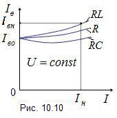

10.3.3. Регулировочная характеристика генератора
|
Для
стабилизации напряжения Uф
необходимо регулировать ЭДС E0
путём соответствующего изменения тока возбуждения Iв.
Регулировочные характеристики Iв
= f(I), снимаемые
при n0
= const и cosj
= const, приведены на рис. 10.10. Они
показывают, как необходимо изменять ток возбуждения при изменении
тока нагрузки генератора, чтобы поддерживать напряжение на выходе
неизменным. Характер изменения тока возбуждения легко объяснить,
анализируя характеристики внешнюю и холостого хода (см. рис. 10.9 и рис. 10.7). |